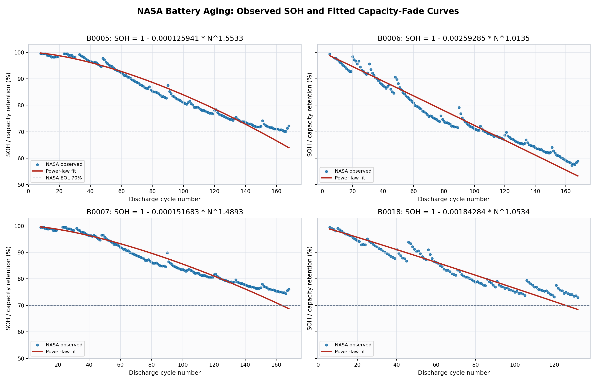
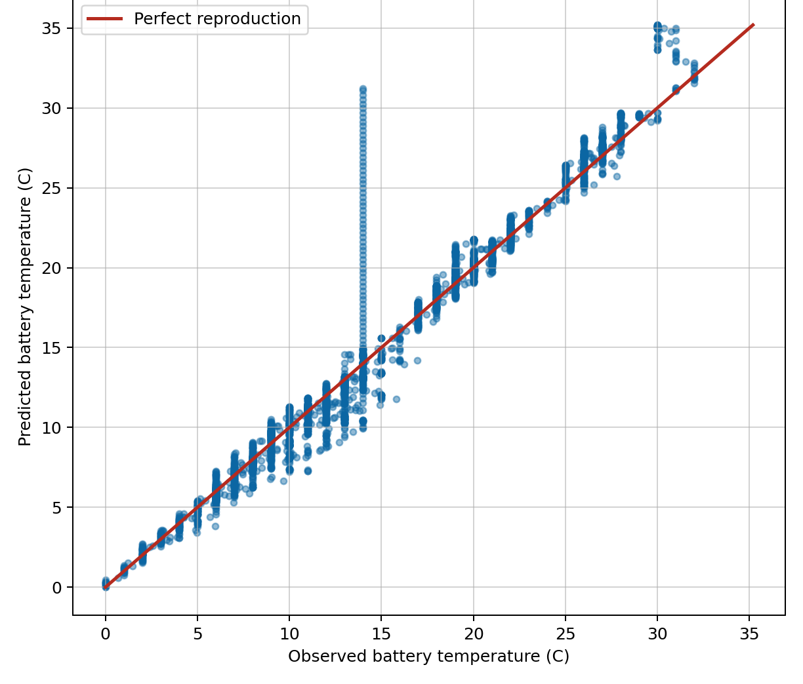

Age and mileage tell only part of the story
Two vehicles of the same age and mileage can have different battery health, affecting usable range and replacement timing.
Track battery health, forecast ageing and estimate vehicle residual value. See how different charging strategies could preserve capacity and value while meeting fleet needs.
Two vehicles of the same age and mileage can have different battery health, affecting usable range and replacement timing.
Fleet owners and lessors need to assess battery condition when planning maintenance, lease returns and resale.
The Data Act, Batteries Regulation and Euro 7 shape access to vehicle and battery data, battery passports and durability requirements.
Combining industrial execution, entrepreneurship, battery expertise and real-world mobility validation.
17+ years across energy, industrial systems and the battery ecosystem.
7+ years in strategy consulting, entrepreneurship and board-level governance.
25+ years across Li-ion technology, industrial strategy and the European battery ecosystem.
30+ years in industrial technology, innovation and R&D leadership.
BlueMaat is developing a service that helps EV fleet owners and lessors track battery health, forecast ageing and estimate vehicle residual value. Spot vehicles that need attention and make more informed decisions at lease return or resale.
Update estimates of battery state of health (SoH) and vehicle residual value as vehicle and market data become available.
Project battery ageing and estimate what the vehicle could be worth at lease return or a planned sale.
Estimate how different schedules could affect battery health and value while still meeting vehicle range requirements.
BlueMaat turns fleet data into estimates of battery health today and forecasts of how it could change.
BlueMaat uses operational data and can draw on battery management system (BMS) data where available.
BlueMaat models estimate battery condition and how it could change over time.
Compare the potential impact of charging choices on battery health, vehicle readiness and costs.
Battery Health and Value is our first service. Charging and energy flexibility are future areas of development.
Track battery condition and ageing to inform maintenance, lease returns and resale.
Make battery health part of fleet charging decisions.
Explore how fleets can participate in energy flexibility while protecting battery health.
Two prototype components evaluated on public datasets: cell ageing and vehicle battery temperature reconstruction.
Transparent empirical capacity-fade model fitted to NASA cell ageing data.

Thermal model calibrated on public real-driving EV measurements.

The models reproduce aspects of cell capacity loss and vehicle battery temperature. The next step is to compare estimates with physical pack measurements and test them on fleet data.
Data sources and references: B. Saha and K. Goebel, NASA Prognostics Center of Excellence Battery Data Set, NASA Ames, 2007; M. Steinsträter, J. Buberger and D. Trifonov, Battery and Heating Data in Real Driving Cycles, IEEE DataPort, 2020, DOI 10.21227/6JR9-5235; BlueMaat model development and performance metrics. Public datasets are used for technical validation only; no vehicle manufacturer affiliation, collaboration or endorsement is implied.
Simulated comparison under identical energy demand, infrastructure and operating constraints. Results exclude solar self-consumption and await validation with operational fleet data.
Vehicles begin charging when plugged in.
Charging scheduled around energy costs and site demand.
Battery health considered alongside charging costs and site demand.
Data sources and references: public EV battery evidence from He et al., EVBattery: A Large-Scale Electric Vehicle Dataset for Battery Health and Capacity Estimation, arXiv:2201.12358, and the associated Figshare dataset, DOI 10.6084/m9.figshare.23301881. The 100 EV depot scenario and optimization comparison are BlueMaat POC calculations built on these public-data insights and transparent operating assumptions; results are indicative and not yet a confirmed customer pilot.
BlueMaat is preparing fleet pilots in France to validate estimates in real operating conditions and understand which insights help fleet teams make decisions.

BlueMaat© 2026